Boss（Veltharis）攻擊：橫斬、反手橫斬（雙手）
還沒接進遊戲。四個方向：朝下、朝右、朝上、朝左（朝左不是朝右的鏡像：右手在劍首那一端、左手在護手上方；朝左時右手在遠側）。每一招從扛劍出手、收招回到扛劍。刀光、劍身符文的預兆、火花由程式畫，這裡沒有。
第四版：和第三版並排
使用者看了第三版：「揮第二下左腳直接向前踏好了，右腳不要收回了……揮劍時上半身要更前進，重心要更往前」。第四版：每一刀是一個弓步，重心跟著踏出去的腳過去、上身壓在前膝上，劍砍到時更低、更遠（劍尖到判定的邊緣、在主角的高度裡）；雙斬第二刀右腳不收回，左腳直接往前踏過去，遊戲在第二刀前把 Boss 往前移 28px（整招前進一步）。並排圖、GIF、影片都照遊戲裡的位置畫（雙斬會往前移）；精靈圖本身是以遊戲的位置為準，所以在逐張裡第二刀那段會看到他往後退回格子中間。
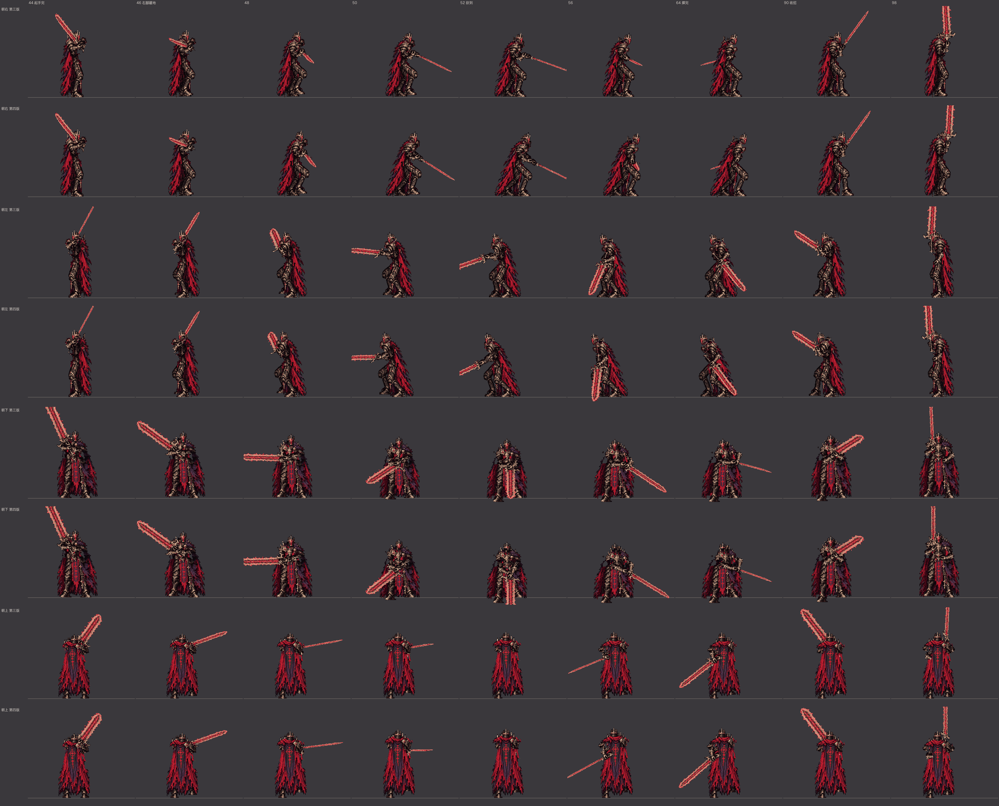
王權橫掃：第三版（上）和第四版（下）同一個時間點並排 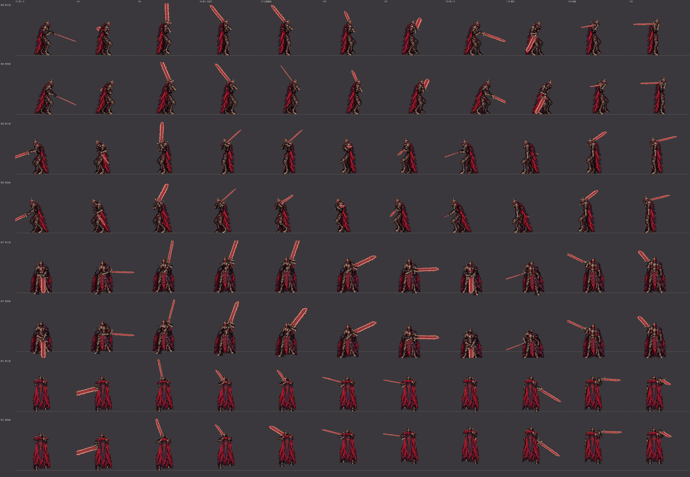
雙斬：第三版（上）和第四版（下）。第四版第一刀後右腳不動，第二刀左腳踏過右腳；第 90–101 幀遊戲把他往前移 28px 遊戲裡會看到的順序
王權橫掃（一階段）：扛劍站著 → 起手 0.8 秒 → 判定 0.15 秒 → 收招 0.9 秒 → 扛劍站著 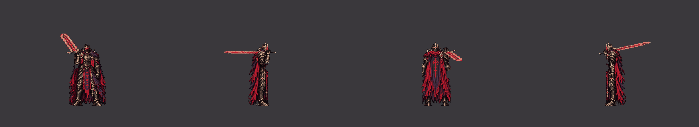
四個方向（2 倍） 朝下（60fps，3 倍） 朝右（60fps，3 倍） 朝上（60fps，3 倍） 朝左（60fps，3 倍） 王權橫掃（二階段：收招縮短成 0.675 秒，同一組圖） 四個方向（2 倍） 朝下（60fps，3 倍） 朝右（60fps，3 倍） 朝上（60fps，3 倍） 朝左（60fps，3 倍） 雙斬：起手 0.8 秒 → 第一刀（0.1 秒）→ 0.9 秒後第二刀（0.1 秒；第二刀前遊戲把 Boss 往前移 28 px）→ 收招 1.0 秒 → 扛劍站著（比開始時前進一步） 四個方向（2 倍） 朝下（60fps，3 倍） 朝右（60fps，3 倍） 朝上（60fps，3 倍） 朝左（60fps，3 倍） 往前走時出招（從走路循環第 10 張直接接王權橫掃） 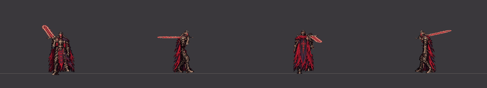
四個方向（2 倍） 朝下（60fps，3 倍） 朝右（60fps，3 倍） 朝上（60fps，3 倍） 朝左（60fps，3 倍） 側移時出招（從往右側移的循環第 5 張直接接雙斬；開頭和王權橫掃同一組） 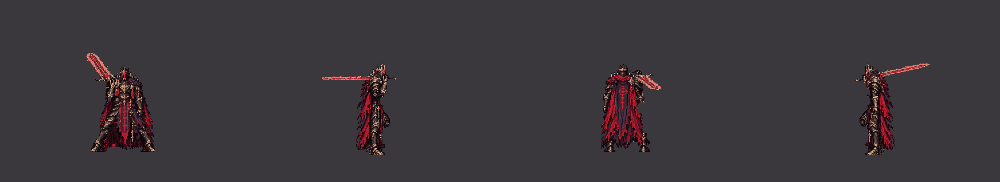
四個方向（2 倍） 朝下（60fps，3 倍） 朝右（60fps，3 倍） 朝上（60fps，3 倍） 朝左（60fps，3 倍） 王權橫掃在砍到的那一刻被完美彈返：被彈開 1.2 秒 → 扛劍站著 四個方向（2 倍） 朝下（60fps，3 倍） 朝右（60fps，3 倍） 朝上（60fps，3 倍） 朝左（60fps，3 倍） 雙斬第二刀被完美彈返：被彈開 1.2 秒 → 扛劍站著 四個方向（2 倍） 朝下（60fps，3 倍） 朝右（60fps，3 倍） 朝上（60fps，3 倍） 朝左（60fps，3 倍） 握劍的手（放大 4 倍）
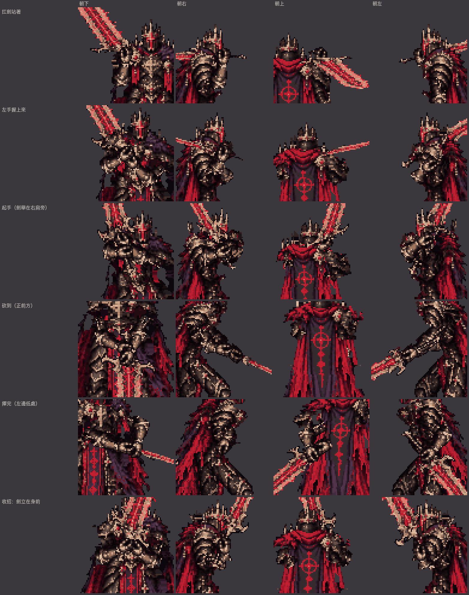
王權橫掃（C1 橫斬，雙手）：扛劍站著、左手握上來、起手（劍舉在右肩旁）、砍到（正前方）、揮完（左邊低處）、收招：劍立在身前 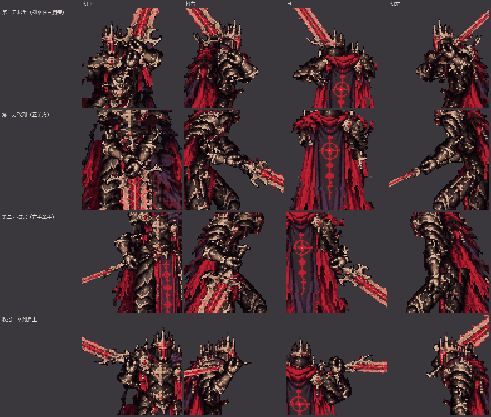
雙斬（C1 橫斬 → C2 反手橫斬，雙手）：第二刀起手（劍舉在左肩旁）、第二刀砍到（正前方）、第二刀揮完（右手單手）、收招：舉到肩上 側面的腿（只畫腿，綠線＝靠鏡頭的右腿，藍線＝左腿；每一張）
一次只動一隻腳：起手時兩腳不動，揮劍時踏出一隻腳、落地和砍到同時，收招時那隻腳收回來。
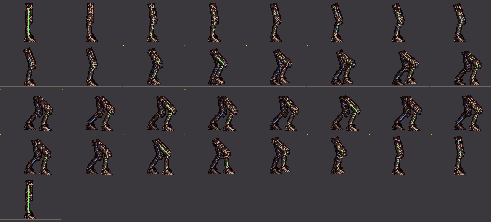
王權橫掃（C1 橫斬，雙手）（每一張，左上角是第幾個戰鬥幀） 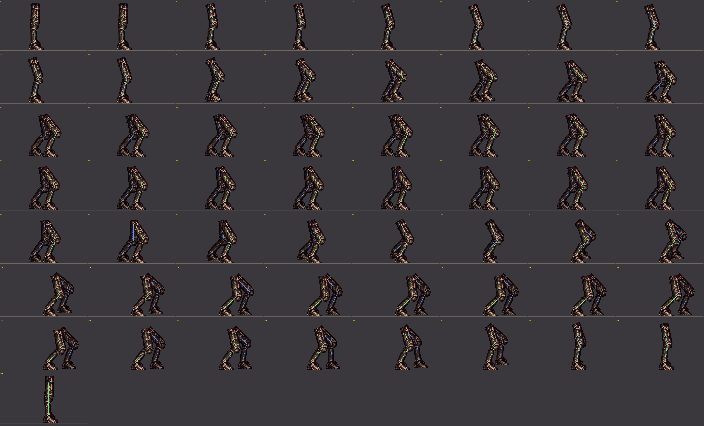
雙斬（C1 橫斬 → C2 反手橫斬，雙手）（每一張，左上角是第幾個戰鬥幀） 逐張
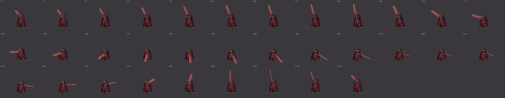
王權橫掃（C1 橫斬，雙手） 朝下（第幾張：從出招開始的第幾個戰鬥幀） 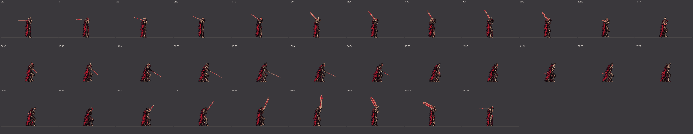
王權橫掃（C1 橫斬，雙手） 朝右（第幾張：從出招開始的第幾個戰鬥幀） 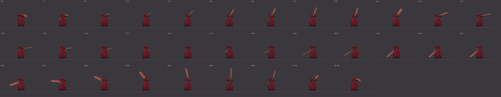
王權橫掃（C1 橫斬，雙手） 朝上（第幾張：從出招開始的第幾個戰鬥幀） 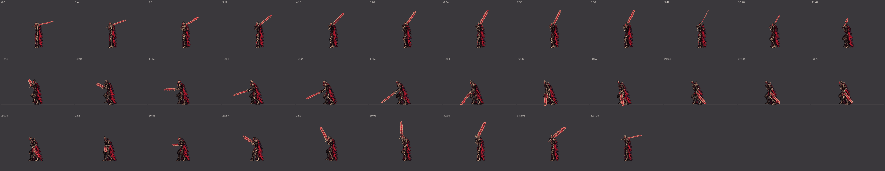
王權橫掃（C1 橫斬，雙手） 朝左（第幾張：從出招開始的第幾個戰鬥幀） 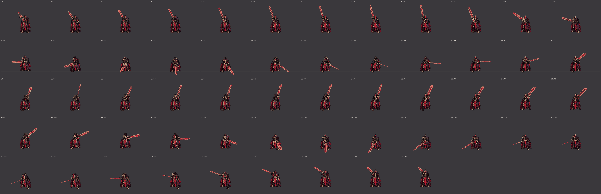
雙斬（C1 橫斬 → C2 反手橫斬，雙手） 朝下（第幾張：從出招開始的第幾個戰鬥幀） 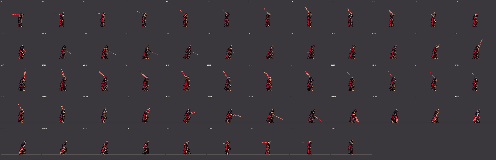
雙斬（C1 橫斬 → C2 反手橫斬，雙手） 朝右（第幾張：從出招開始的第幾個戰鬥幀） 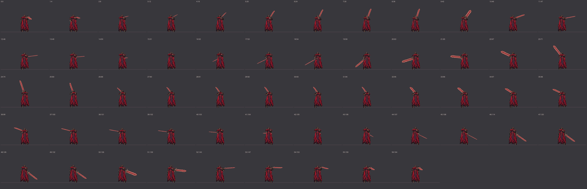
雙斬（C1 橫斬 → C2 反手橫斬，雙手） 朝上（第幾張：從出招開始的第幾個戰鬥幀） 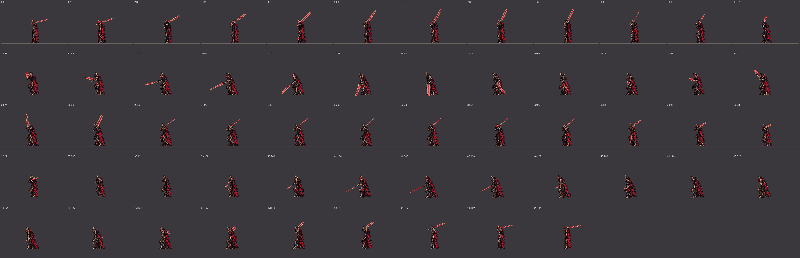
雙斬（C1 橫斬 → C2 反手橫斬，雙手） 朝左（第幾張：從出招開始的第幾個戰鬥幀） 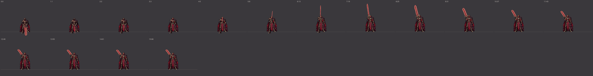
王權橫掃被彈開 朝下（第幾張：從出招開始的第幾個戰鬥幀） 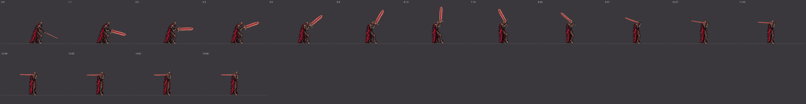
王權橫掃被彈開 朝右（第幾張：從出招開始的第幾個戰鬥幀） 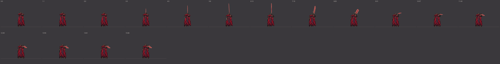
王權橫掃被彈開 朝上（第幾張：從出招開始的第幾個戰鬥幀） 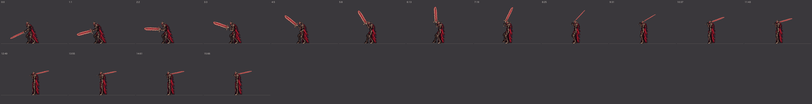
王權橫掃被彈開 朝左（第幾張：從出招開始的第幾個戰鬥幀） 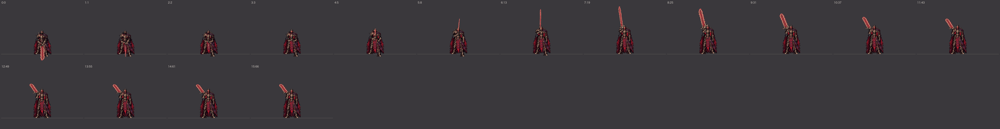
雙斬第二刀被彈開 朝下（第幾張：從出招開始的第幾個戰鬥幀） 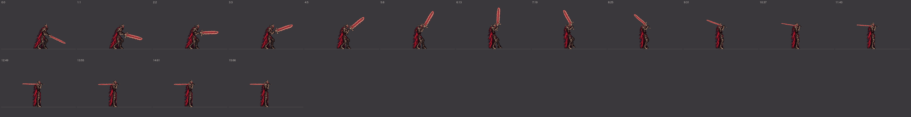
雙斬第二刀被彈開 朝右（第幾張：從出招開始的第幾個戰鬥幀） 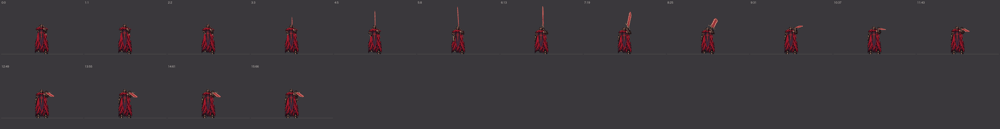
雙斬第二刀被彈開 朝上（第幾張：從出招開始的第幾個戰鬥幀） 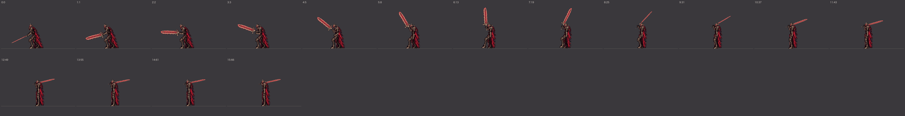
雙斬第二刀被彈開 朝左（第幾張：從出招開始的第幾個戰鬥幀） 較早的版本
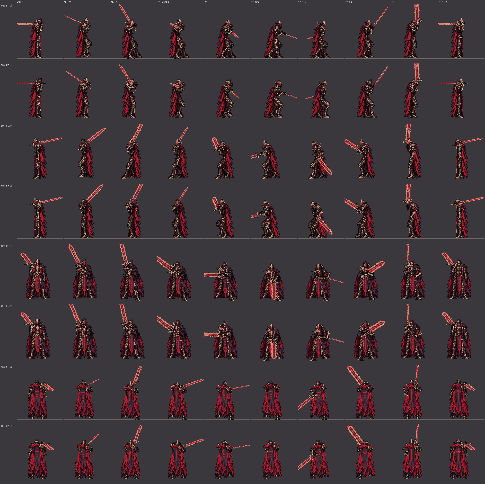
王權橫掃：第二版（上）和第三版（下）——起手時兩腳不再一起換位置 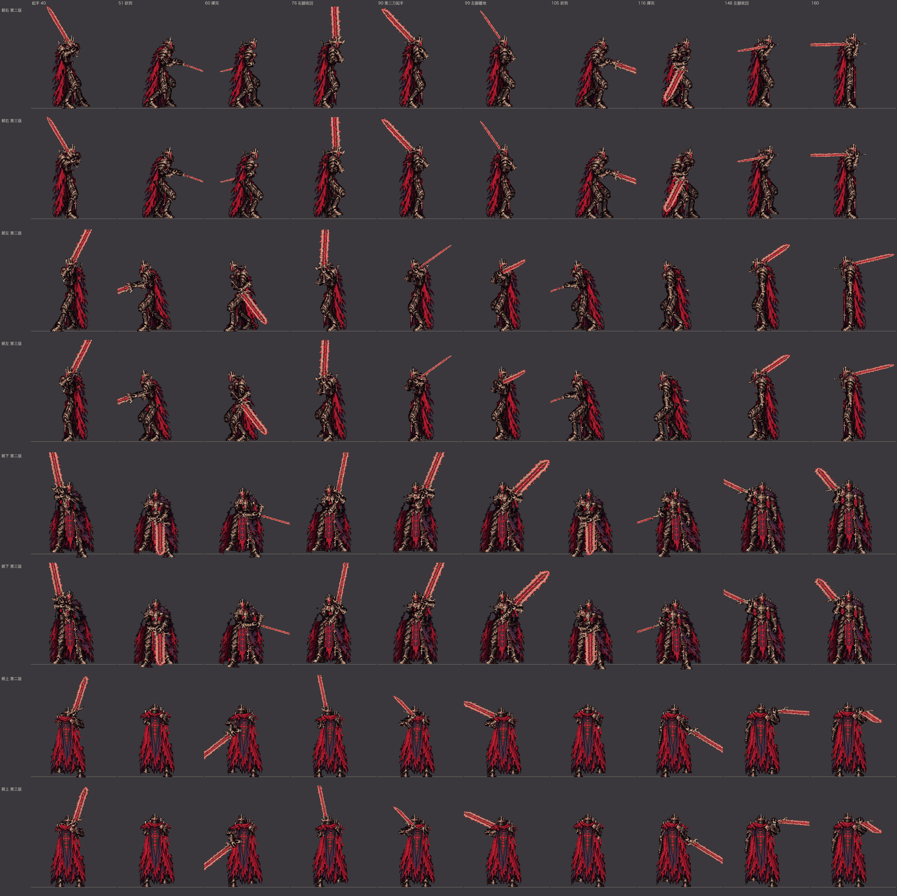
雙斬：第二版（上）和第三版（下） 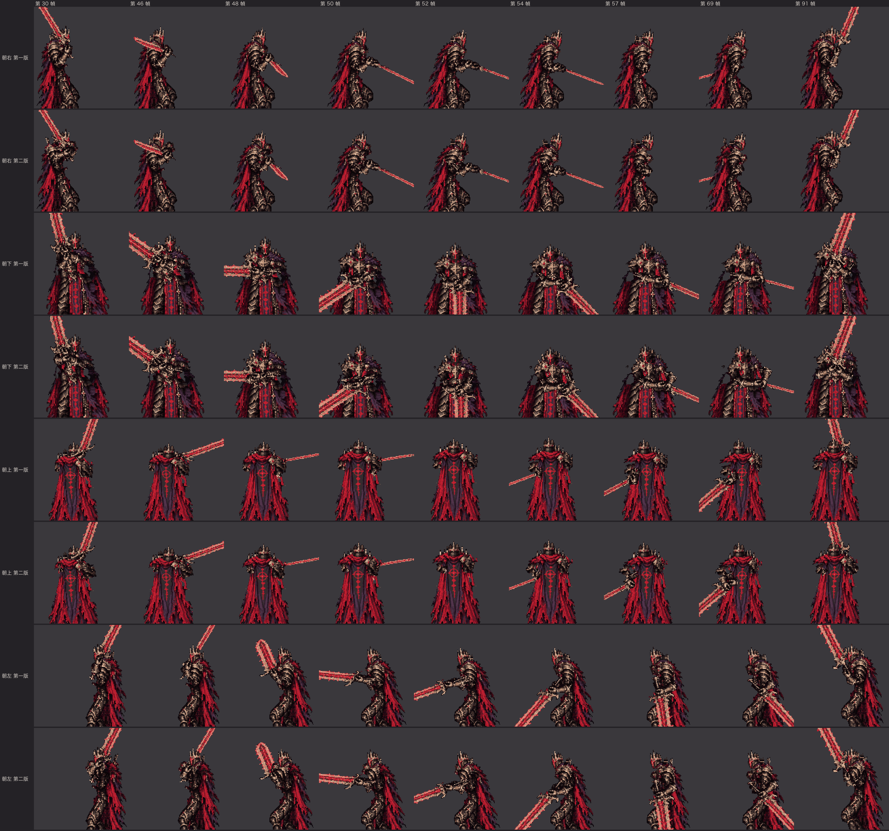
王權橫掃，第一版（上）和第二版（下）並排，四個方向（3 倍）：肩甲跟著上臂擺、肩膀跟著抬起往前，上臂和手肘從肩甲下露出來（之後的版本手臂都一樣）